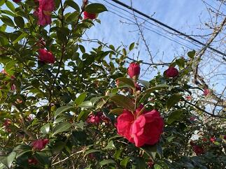
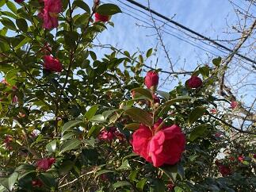
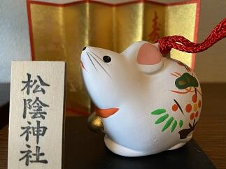
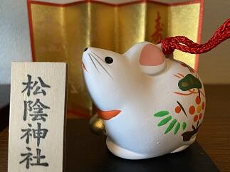
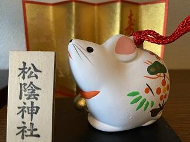
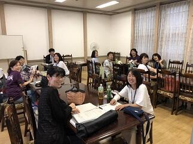

文字
背景
行間


カテゴリ:その他
立春大吉（庚子）
本日（令和2年2月4日）は立春です。暦の上では春です。立春を始めとする二十四節気の節気は、太陽の角度や動きにより、天文学的に決められています。太陽黄経が315度になった日が立春です。とは言え、この時期は1年でももっとも寒い時期でもあります。通勤途中の朝の冷え込みは厳しく暖冬の今年でも久しぶりに氷点下でした。そんななか、桜の蕾の様子を見ると春の訪れに向けて着実に準備が進んでいることを感じます。受験生の皆さん春はすぐそこです、頑張ってください。
（写真 左：山茶花と河津桜の蕾 右：校長室で開花した河津桜）

（写真 左：山茶花と河津桜の蕾 右：校長室で開花した河津桜）

節分（庚子）
 本日は、節分です。節分の日には、一年の厄を払うために「豆まき」を行うのが最も一般的ですが、令和に入って初めての節分ですから、ニュースによると各地とも例年にもまして、多くの神社仏閣で有名人等による「豆まき」が行われたそうです。私が小学生ごろはどこの家でも豆まきが行われていたように思います。「福は内、鬼は外」という元気な声がここかしこで響いていました。
本日は、節分です。節分の日には、一年の厄を払うために「豆まき」を行うのが最も一般的ですが、令和に入って初めての節分ですから、ニュースによると各地とも例年にもまして、多くの神社仏閣で有名人等による「豆まき」が行われたそうです。私が小学生ごろはどこの家でも豆まきが行われていたように思います。「福は内、鬼は外」という元気な声がここかしこで響いていました。最近は、豆まきと併せて、恵方巻き（太巻き）をその年の恵方（方角）に向いて丸かぶりする風習も全国的に行われていますが、今年は庚の年なので,恵方（めぐみのかた）は西南西です。皆さんの健康と益々のご活躍を祈念いたします。
受験生の皆さん頑張ってください。
合格祈願（湯島天満宮）
元日、２日ともそれほど寒くもなく初詣には良い日和になりました。私は初詣では昨日に続いて天神様巡りをしています。そこで佐倉高校の皆さんの学業成就と合格祈願をお願いしています。今日は、東京の湯島天満宮（湯島天神）にお参りしてきました。さすがに多くの受験生の参拝者で賑わっていました。受験生の皆さんは、本番で力を発揮できるように健康に気をつけてコンディションを整えていきましょう。応援しています。


謹賀新年 令和２年（庚子）元旦
明けましておめでとうございます。令和２年元旦です。今年の干支（十干・十二支）は「庚 子（かのえ ね）」です。「子」は十二支の一番目にあたる干支です。「子」の字は、種の中に生命が芽吹き始めた様子を表していて、また、十干の金の陽を表す「庚」は新たな状態への変化を意味していますので、「庚子」の本年は、新しく物事を始める人や、目標に向かってこれまで努力してきた人の背中を後押ししてくれる年回りとなるそうです。皆で健康に気をつけながら目標達成に向けて努力して良い年にしていきましょう。今年もよろしくお願いします。

 

 台風一過
観測史上最強の台風19号が昨日10月12日から今日13日にかけて日本各地で猛威を振い、たいへんな被害が出ています。まずは、被災された皆様に心よりお見舞い申し上げます。昨日、佐倉市全域にレベル４の避難勧告が出されました。第一体育館を佐倉市の避難所として昨日の午前10時から開設していました。本校には28名の方々が避難されていました。本校を利用されていた方々は午前6時30分ころには皆さん御自宅にお戻りになられました。佐倉市では、本日午前8時に避難勧告を解除し併せて市内すべての避難所を閉鎖しました。
学校の被害状況ですが、本校の周辺では昨日の23時50分ごろには風雨がおさまりはじめ台風15号に比べて被害は格段に少なくてすみました。写真は何事も無かったような青空の朝の風景。


学校の被害状況ですが、本校の周辺では昨日の23時50分ごろには風雨がおさまりはじめ台風15号に比べて被害は格段に少なくてすみました。写真は何事も無かったような青空の朝の風景。
台風15号の爪痕


 本日9月9日(月)未明にかけて暴風雨を伴って県内を直撃した台風15号は、東京湾を北上し朝5時頃に千葉市付近に上陸しました。千葉市では最大瞬間風速57.5ｍを観測し県内での観測史上最大を更新したそうです。この影響で県内では広く停電が発生しました。今現在も、停電が続いているなど暴風雨での多くの被害が千葉県の各地で報告されています。天気が回復した後の塩害も心配です。被災された方々には心からお見舞い申しあげると共に 復旧にご尽力されている皆様には感謝を申し上げるとともに安全に留意され一日も早く作業の終えられることをお祈りいたします。
本日9月9日(月)未明にかけて暴風雨を伴って県内を直撃した台風15号は、東京湾を北上し朝5時頃に千葉市付近に上陸しました。千葉市では最大瞬間風速57.5ｍを観測し県内での観測史上最大を更新したそうです。この影響で県内では広く停電が発生しました。今現在も、停電が続いているなど暴風雨での多くの被害が千葉県の各地で報告されています。天気が回復した後の塩害も心配です。被災された方々には心からお見舞い申しあげると共に 復旧にご尽力されている皆様には感謝を申し上げるとともに安全に留意され一日も早く作業の終えられることをお祈りいたします。今日は各社とも計画的に始発電車から運休しており、移動の主体は自家用車やバスなどの自動車となった訳です。それなのに今日の道路状況は普段と違い、高速道路は全面通行禁止で、一般道では信号機のほとんどが消えており、冠水して車が何台も浸かっていたり、電柱が折れていたり、倒木で道を塞いでいたりと走れる道路を探すのが一苦労でした。また、やっと走れる道を見つけても大渋滞と運転するのにとっても疲れました。学校に通勤するのに4時間かかりました。学校に着いて校舎施設や樹木などの被害状況を確認すると今回の台風のすごさを改めて実感しました。その一部ですが東郷池周辺の倒木(3本の檜、内2本は東郷池の中に枝を入れて倒れている)と記念館の屋根(中央タワーの屋根の支え板が破損)の被害状況をお知らせします。本当にこの光景を見た時は、いつも見慣れた風景がそこには無く、ショックを隠しきれませんでした。
→ 池の鯉の様子は ≫続きを読む 東郷池の鯉 をクリックしてください。


 台風15号で被害を受けた東郷池の現状です。倒木は池の中にその枝を入れた状態で倒れています。そんな中でもお陰様で鯉や鮒やメダカは無事でした。
台風15号で被害を受けた東郷池の現状です。倒木は池の中にその枝を入れた状態で倒れています。そんな中でもお陰様で鯉や鮒やメダカは無事でした。池の水の手作り循環濾過装置も無事に動いているので池の水自体はきれいです。鯉たちは元気に泳いでいます。
合格祈願その２
 会議で京都に行く機会があったので、今回は北野天満宮に3年生の合格祈願に行ってきました。
会議で京都に行く機会があったので、今回は北野天満宮に3年生の合格祈願に行ってきました。北野天満宮でも宮司さんにご祈祷をお願いし拝殿に上がらせていただいて参拝してまいりました。宮司さんから来年3月末日まで毎朝ご神前にてご祈祷していただける旨お伺いしました。本当にありがたいことです。ご祈祷のあと、合格祈願の絵馬を奉納させていただきました。
北野天満宮は、菅原道真公をご祭神としておまつりする全国約1万2000社の天満宮、天神社の総本社だそうです。ところで、菅原道真公といえば梅ですが、広く境内を使って梅干しの土用干しがされていて、おいしそうな梅酢の香りが辺り一面をやさいく包んでいました。
合格祈願その１
 大宰府天満宮で３年生の合格祈願をしてきました。宮司さんにご祈祷をお願いし本殿に上がらせていただいて参拝してまいりました。宮司さんから太宰府天満宮は、菅原道真公の御墓所の上にご社殿を造営し、その御神霊を永久にお祀りしている神社であることをお聞きしました。３年生の諸君、将来の夢の実現に向けて頑張ってください。応援してます。
大宰府天満宮で３年生の合格祈願をしてきました。宮司さんにご祈祷をお願いし本殿に上がらせていただいて参拝してまいりました。宮司さんから太宰府天満宮は、菅原道真公の御墓所の上にご社殿を造営し、その御神霊を永久にお祀りしている神社であることをお聞きしました。３年生の諸君、将来の夢の実現に向けて頑張ってください。応援してます。 スケジュール（特に目標）の確認を！！
 2019年度に入って、1年生は4月9日に入学してから78日、２，３年生は、始業式から79日目です。この間、皆さんは多くのことに取り組んできました。日々の学習はもちろん第一回考査、部・同好会活動、生徒総会、体育祭、文化祭などそれぞれに皆さんはご自分で目標を立ててその目標達成に向かって励んで来たと思います。それらの目標の達成状況はどうでしたか。目標もスパンの長い長期目標とその目標を中間で点検する中期目標と日々の努力を確認するための短期の目標があります。それらの目標は具体的で自分で客観的に達成状況を評価できるものでなければなりません。今自分には、自分が目指す将来の目的に向かって何が理解できていて、何ができて、自分は目的に向かってどこまで見えるようになってきたのか。裏返せば、何ができていないか。何を理解していないか、目的達成までの道のりのどこを歩んでいるのか、はっきりさせることで具体的な目標を立てて学ぶことができます。そのためにも、達成目標と期間との関係は重要です。例えば、最後のセンター試験は2020年1月18日、19日ですから、あと207日、これに代わる「大学入学共通テスト」は更にその約１年後の2021年1月に実施が予定されています。これらはひとつの区切りとして皆さんの目標になるわけです。これまでの進捗を考慮して、どのような目標をどの時期に立てて臨んでいくのか。しっかりと自分の将来の目的と向き合ってみてください。より具体的な目標を設定してある達成可能なスケジュールかどうかの確認を自分だけでなくアドバイスをいただきたい人にも見てもらって確認してください。
2019年度に入って、1年生は4月9日に入学してから78日、２，３年生は、始業式から79日目です。この間、皆さんは多くのことに取り組んできました。日々の学習はもちろん第一回考査、部・同好会活動、生徒総会、体育祭、文化祭などそれぞれに皆さんはご自分で目標を立ててその目標達成に向かって励んで来たと思います。それらの目標の達成状況はどうでしたか。目標もスパンの長い長期目標とその目標を中間で点検する中期目標と日々の努力を確認するための短期の目標があります。それらの目標は具体的で自分で客観的に達成状況を評価できるものでなければなりません。今自分には、自分が目指す将来の目的に向かって何が理解できていて、何ができて、自分は目的に向かってどこまで見えるようになってきたのか。裏返せば、何ができていないか。何を理解していないか、目的達成までの道のりのどこを歩んでいるのか、はっきりさせることで具体的な目標を立てて学ぶことができます。そのためにも、達成目標と期間との関係は重要です。例えば、最後のセンター試験は2020年1月18日、19日ですから、あと207日、これに代わる「大学入学共通テスト」は更にその約１年後の2021年1月に実施が予定されています。これらはひとつの区切りとして皆さんの目標になるわけです。これまでの進捗を考慮して、どのような目標をどの時期に立てて臨んでいくのか。しっかりと自分の将来の目的と向き合ってみてください。より具体的な目標を設定してある達成可能なスケジュールかどうかの確認を自分だけでなくアドバイスをいただきたい人にも見てもらって確認してください。そして、そのとき大切なことは、目標や進捗状況を可視化することです。自分の思考を整理するためだけでなくアドバイスを受けたいと思う人に確認してもらうためにも有効な手段となります。
明日は第2回考査の一週間前ですから考査日程が発表されます。考査もひとつの短期目標として日々の学習の達成状況の確認により良く活用してください。
PTA役員の皆さんの支援活動に感謝！

今日はPTAの本部役員さんを中心とする役員の方々が明日のバザーの準備をしていただきました。
また、広報委員の方々も、PTA広報の取材と編集のために今日と明日活動されます。
PTA役員の皆さん本当にご多用なかいつも生徒の活動支援のためにご協力していただいて本当にありがとうございます。
明日は鍋山祭の一般公開と1,000か所ミニ集会もどうそよろしくお願いいたします。
今日はPTAの本部役員さんを中心とする役員の方々が明日のバザーの準備をしていただきました。
また、広報委員の方々も、PTA広報の取材と編集のために今日と明日活動されます。
PTA役員の皆さん本当にご多用なかいつも生徒の活動支援のためにご協力していただいて本当にありがとうございます。
明日は鍋山祭の一般公開と1,000か所ミニ集会もどうそよろしくお願いいたします。